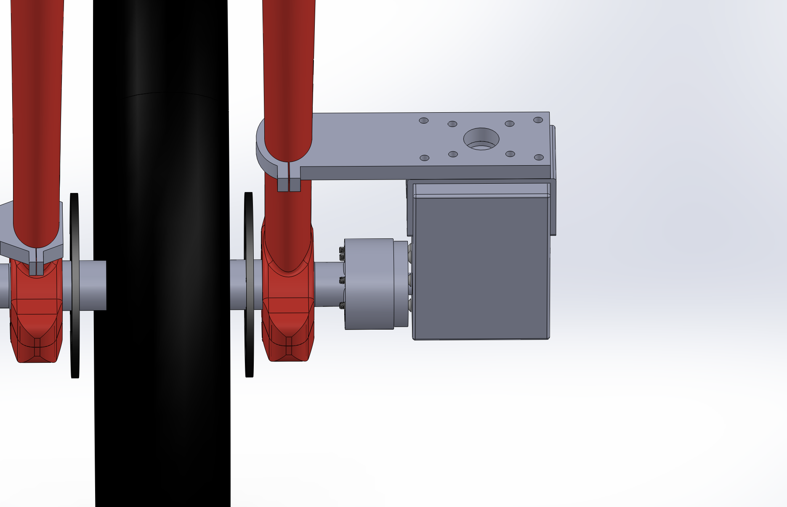
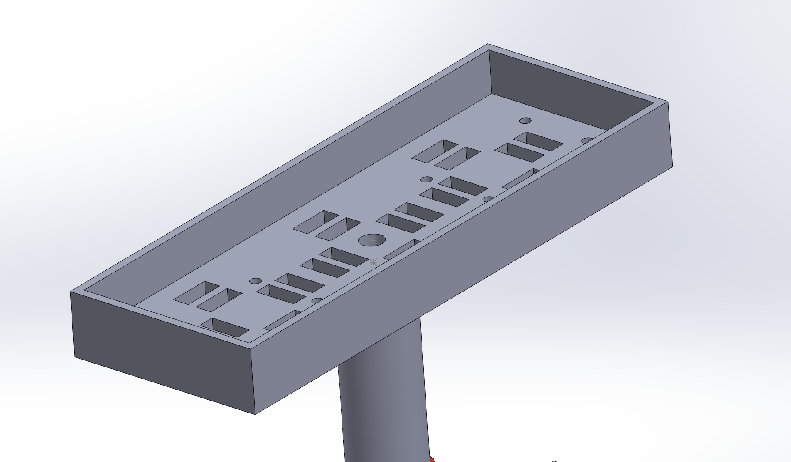
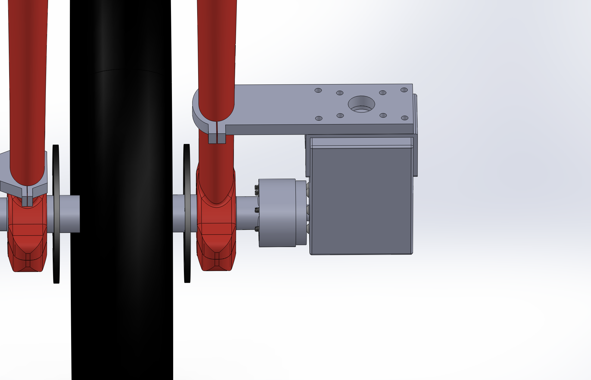
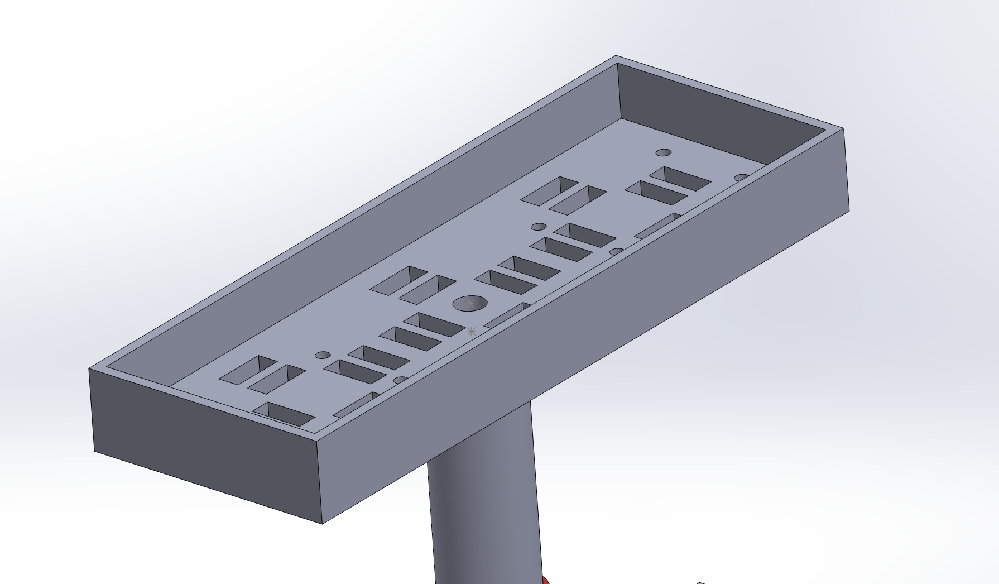

Ghost Rider – Self-Balancing Unicycle
Skills: Control Systems, PID Tuning, Sensor Fusion, Embedded Systems, Real-Time Systems, Mechanical Design, Sensor Fusion, CAD (Solidworks), 3D Printing, Machining, Structural Mounting, Hardware Debugging
Project Overview
The Ghost Rider is a self-balancing unicycle developed as part of Northwestern’s EE 327 course. Its aim was to autonomously stabilize in both sagittal (front–back) and coronal (side-to-side) planes using a DC Motor Driven Wheel and a servo-driven counterweight. Orientation feedback comes from an IMU running a tuned Madgwick filter, with separate PID controllers for each axis.
While the final prototype could not balance entirely unaided, it demonstrated clear self-stabilizing responses to disturbances. Future improvements would involve nonlinear iLQR control rather than PID for better trajectory tracking and realistic unicycle dynamics.
Lessons Learned
This project didn’t go exactly as planned, but it provided valuable growth opportunities. Below are key lessons we learned throughout the quarter:
- Communication: Dividing work by specialty improved efficiency but limited team members’ visibility into each other’s progress. I learned that clear communication and thorough documentation are essential to effective engineering teamwork.
- Simplification: Our initial goal was ambitious. A simpler, lower-dimensional problem might have led to earlier success and foundational lessons to build on.
- Resourcefulness: Supply issues forced us to improvise by modifying a servo motor for the wheel drive. This taught me that flexibility and creativity can keep projects moving despite external setbacks.
- Safety: Working with LiPo batteries highlighted the importance of rigorous power and wiring safety precautions.
Design Constraints and Requirements
Since self-balancing unicycles are uncommon, we defined key project parameters, including budget and motor specs. Some of our core calculations are outlined below.
- Budget: $300 total ($100/student), final spend $219.45 — balancing motor quality, IMU accuracy, and structural choices.
- Wheel Motor Torque Requirement: \(\tau_{1,\text{max}} = 20\ \text{cm} \times 2.5\ \text{kg} = 50\ \text{kg·cm}\)
- Wheel Motor Speed Requirement: 1.28 RPS under max torque load.
- Counterweight Mass: \( \approx 2.26\ \text{kg} \) (51% of unicycle’s weight)
- Counterweight Motor Torque Requirement: \(\tau_{2,\text{max}} = 50\ \text{cm} \times 2.26\ \text{kg} = 113\ \text{kg·cm}\)
- Battery Capacity: \(I_{\text{avg}} = 6.86\ \text{A},\ C = 3.43\ \text{Ah}\)
Mechanical Design
The design was my primary focus. Starting from an existing unicycle, we adapted and modified it extensively. Below is an overview of the design elements:
- Custom seat & shaft to mount electronics and counterweight arm
- Counterweight coupling via 80/20 extrusion + 3D printed adapter
- Wheel motor coupling to modified unicycle crank axle
 



System Architecture
Control is handled by an ESP32 microcontroller running FreeRTOS, with tasks for motor control, IMU reading, servo actuation, and web-server monitoring. Synchronization uses semaphores and mutexes to ensure real-time safe operation.
- Wheel PID → Pitch stabilization via DC motor
- Counterweight PID → Roll stabilization via servo arm
IMU Sensor Fusion
The Madgwick filter fuses accelerometer and gyroscope data into quaternion orientation estimates:
\[ q(t+\Delta t) = q(t) + \frac{1}{2} q(t) \otimes \omega(t)\Delta t - \beta \cdot \nabla f(q) \]
We customized \(\beta\) dynamically using RMS accelerometer magnitude to reduce noise during motion.
Performance & Limitations
Wheel Motor: Stable against pitch disturbances, but prone to overshoot and oscillations.
Counterweight Motor: Not robust; jitter from noisy IMU signals led to mechanical wear.
Limitations: Mechanical fragility, loosening fasteners from vibration, lack of full autonomous balance.
Challenges
- Motor sourcing delays for wheel drive
- ESP32 flashing/recognition issues
- Wire durability under high current
- Component burnout close to demo date
Next Steps
- Switch from PID to iLQR control for realistic balancing trajectories
- Improve mechanical robustness of couplings and mounts
- Add OTA updates and onboard telemetry logging